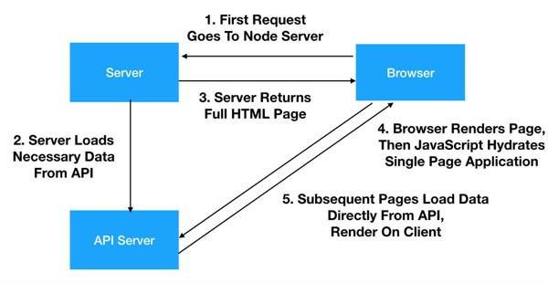

Server-Side Rendering

 Георги Гърдев
Георги Гърдев- georgi@gardev.com
 gar.dev
gar.dev- GeorgeSG
 georgesg92
georgesg92

Какво е
Server-Side Rendering?
На прост език:
сглобяване на HTML на сървъра
Това SSR ли е?
<?php
$name = 'Georgi Gardev';
echo 'My name is' . $name . '';
?>ДА!
... донякъде
... и след това дойде JavaScript

имаме модерни browser-и
The age of Single-Page Apps

Проблеми
1. Accessibility
SPA workaround: Фокусиране върху <body> и слагане на tabindex="-1"?
2. SEO
Server:
Loading...Web crawler:
Dude, where's your page?
3. Performance
Решението - обратно към Server-Side Rendering
...но все пак с библиотеките, които харесваме
Enter node.js
С node.js можем да изпълняваме един и същ код и на сървъра, и в браузъра
Опция 1: Universal Mode
1. Библиотеката се интерпретира на сървъра
2. Поисканата страница се рендерира (до колкото е възможно)
3. Рендерирания HTML се връща на клиента
Hydration
след като първоначалния HTML е зареден, зареждане на допълнителен JavaScript
(Dynamic hydration?
за различни User Agents?
за различни категории устройства?)
Universal mode: RECAP
Опция 2: Static Site Generation
+ Не изисква сървър
+ Може да се хостне навсякъде - CDN, Github Pages
- неудобно ако съдържанието се променя често
- неудобно ако имате много динамични страници

Nuxt.js
- Базиран на Vue.js
- Включва Vue Router, Vuex, Vue Meta и други
- Предефинирана конфигурация за Vue, Webpack, Babel и PostCSS
- Лесно конфигуриране, дефиниране на plugins, middlewares и други
- 57 KB (minified + gzipped)
- SPA / SSR / Static Generation
Ползва се в:
Todoist
GitLab
Roland Garros
Louis Vuitton
Алтернативи
Next.js (React)
GatsbyJS (React)
Demo
JAMstack
jamstack.org
JavaScript
APIs
Markup
Headless CMS
Prismic.io
Contentful
Wordpress REST API
Static Deployment
GitHub (за пре-рендерирани страници)
Netlify
CloudFlare
Firebase